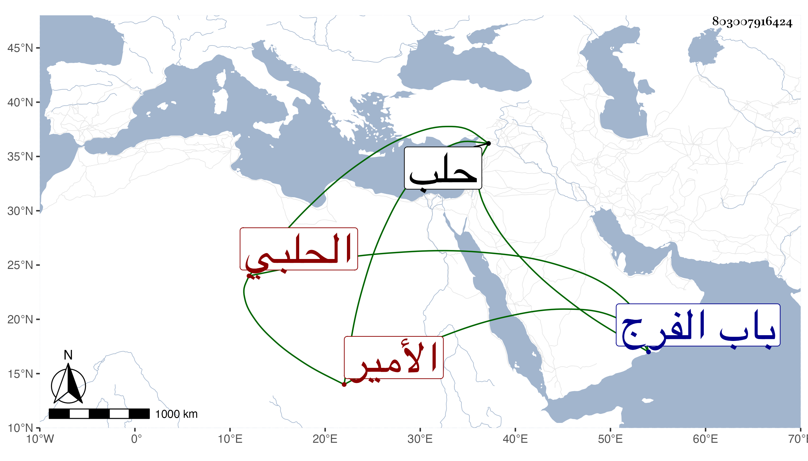

0902Sakhawi.DawLamic.ITO20230111-ara1.EIS1600.803007916424
Biography ID: 803007916424
1164
شعبان بن محمد بن كيكلدي الأمير شهاب الدين الحلبي . ولد في سنة تسع وأربعين وسبعمائة ، وكان إنسانا حسنا خيرا ذا عصبية ومكارم ومحبة للفقراء والصلحاء والعلماء ، سمع الحديث على البرهان الحلبي وغيره ، وصار يستحضر الكثير من التاريخ وأيام الناس ويذاكر به . مات بحلب بعد أن مرض ثمانية أيام ليلة الجمعة العشرين من رمضان سنة ثمانى عشرة ، وصلى عليه بعد صلاة الجمعة بجامعها الكبير تقدم الناس شيخه البرهان ، ودفن على قارعة الطريق خارج باب الفرج بوصية منه في ذلك كله وكانت جنازته مشهودة وكتب على لوح قبره قول الأديب الشمس محمد الدمشقي المزين :
| بقارعة الطريق جعلت قبري | لأحظى بالترحم من صديق |
| فيا مولى الموالي أنت أولى | برحمة من يموت على الطريق |
ذكره ابن خطيب الناصرية ، وكان صديقه .
